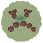

Tailor your cookies!
Cookies are small bits of data stored in your browser that help websites remember things like your login, preferences, and settings to create a smoother browsing experience.
But not all cookies are harmless — some are used to track your activity across websites, collect personal data, and build detailed profiles for advertising and analytics.
With Cookie Jar, you can manage your cookie preferences at a glance, and set your default preferences so you don't have to choose between convenience and privacy.
Safe vs. Unsafe
Cookies
Safe Cookies
- Protect user privacy
- Keep users logged in securely
- Improve website functionality
- Usually temporary or limited-use
- Only used by the website you visit
- Collect minimal personal data
- Support safer browsing experiences
Includes session & authentication

Unsafe Cookies
- Track browsing activity across websites
- Collect excessive personal data
- Used for targeted advertising
- Monitor user behavior and habits
- May sell or distribute user data
- Increase risk of data misuse or leaks
Includes tracking & third-party